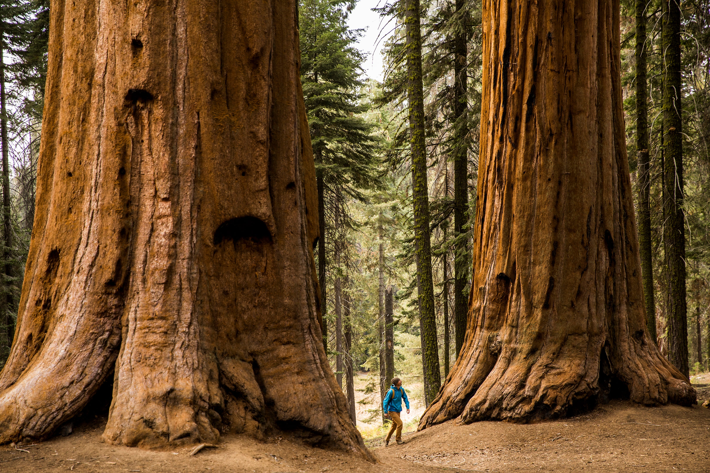

üá∫üá∏ West Coast Trip ‚Ä¢ 10-Day Itinerary
Oct 2–11, 2025 • SF → LA → Vegas → Ann Arbor → Boston

← Previous
Back to Main
Next →
Day 3 • Sat Oct 4, 2025
Redwoods + Silicon Valley Loop
Schedule
7:30 AM
Pick up rental car
Open in Google Maps
8:30–11:00 AM
Muir Woods National Monument (reserve parking/shuttle)
Open in Google Maps
11:15 AM
Drive south (~1 hr 15 min)
Open in Google Maps
12:30 PM
Lunch in Cupertino
Open in Google Maps
1:30 PM
Apple Park Visitor Center (free parking)
Open in Google Maps
3:00 PM
Googleplex (Mountain View) — photo stop
Open in Google Maps
4:00 PM
Stanford University campus (Law Quad, Palm Drive)
Open in Google Maps
6:00 PM
Drive back to SF (~1 hr)
Open in Google Maps
Dinner
Indian in SF
Open in Google Maps
← Previous
Back to Main
Next →